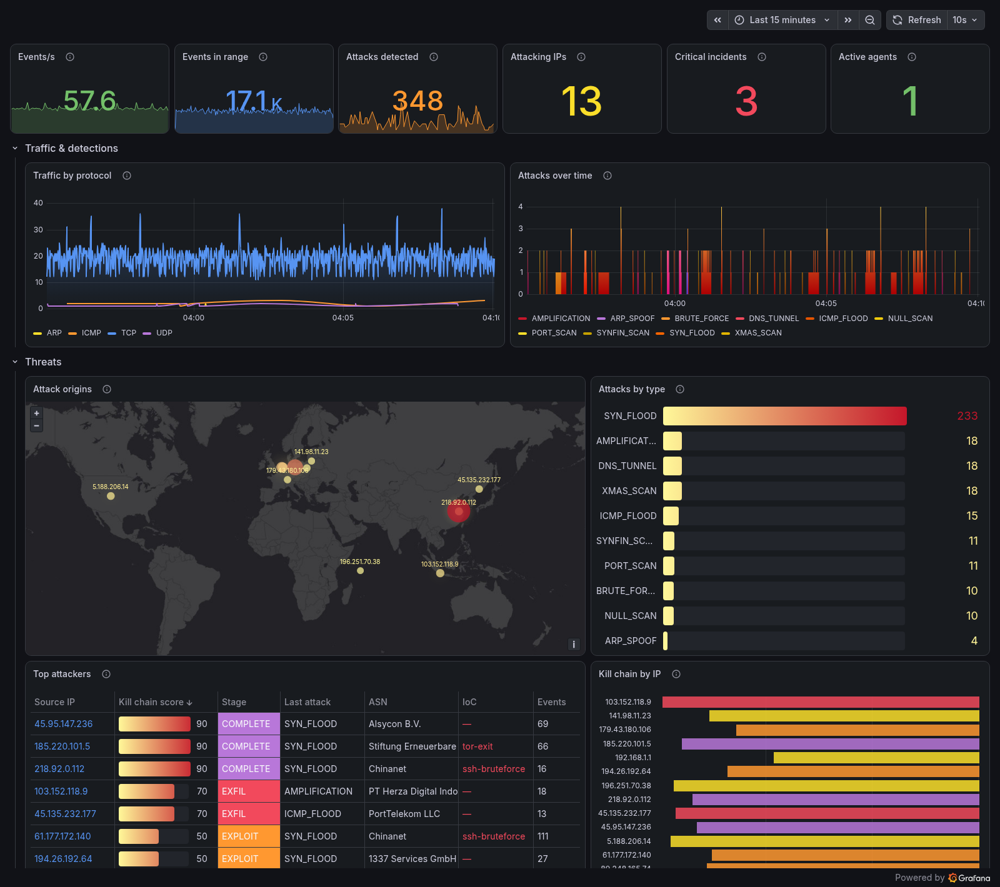

Network Traffic Analyzer
IDS de alto desempenho em C11 · arquitetura Agent/Server · v8.1
Agentes em C capturam pacotes em modo promíscuo (libpcap/Npcap) e detectam port scans, SYN/ICMP flood, DNS tunneling, ARP spoofing e brute force com baseline EWMA adaptativo e correlação de kill chain mapeada no MITRE ATT&CK. Pipeline multi-thread com ring buffers lock-free (350k+ pps), telemetria via RabbitMQ, InfluxDB e Grafana, enriquecimento com GeoIP, AbuseIPDB e WHOIS, e agente nativo como Windows Service.
C11libpcapRabbitMQInfluxDBGrafanaDockerMITRE ATT&CK
github.com/EduardoMartins-Dev/Network-Traffic-Analyzer →
Quantum-Safe Scanner
Scanner de criptografia fraca em código
Detecta RSA < 2048, SHA-1/MD5, TLS sem verificação, segredos hardcoded e cifras quebradas, com orientação para migração pós-quântica. Saída em texto, JSON, SARIF, Markdown e CSV, pronto para CI.
PythonASTSARIFStreamlit
Ver repositório →
Ambiente Check
Auditoria de ambiente para implantações de ERP
Script PowerShell que valida SO, CPU, RAM, disco, .NET, Firebird, conectividade e latência, e gera um relatório pronto para chamados de infraestrutura.
PowerShellAuditoriaDeploy
Ver repositório →
Quantum Circuit Simulator
Simulador de circuitos quânticos
Simulador em Python com vetor de estado em NumPy: portas Hadamard, Pauli, Phase, CNOT e medição. Interface web em Streamlit e CLI.
PythonNumPyStreamlit
Ver repositório →